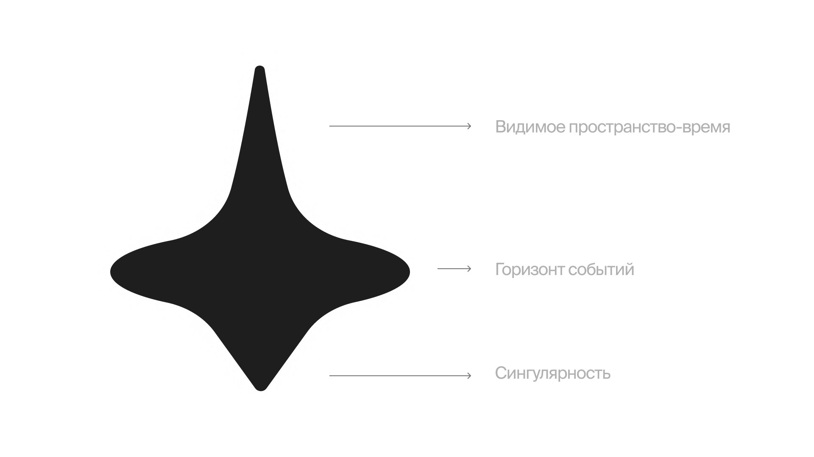
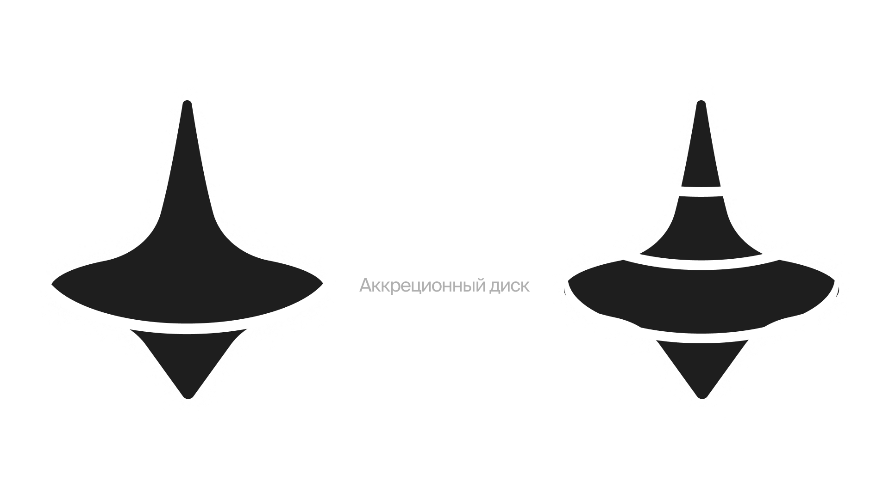
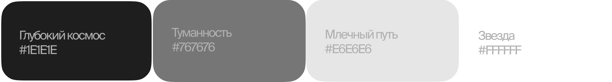
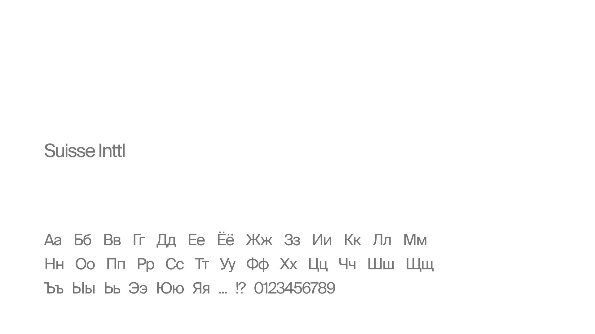
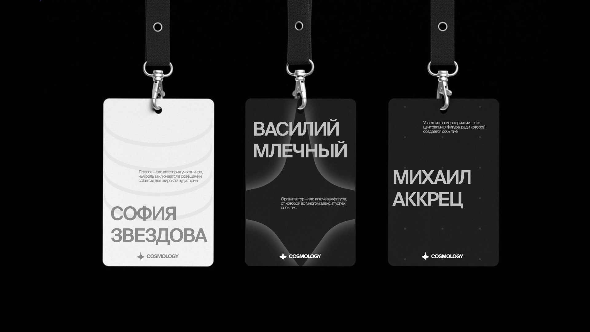
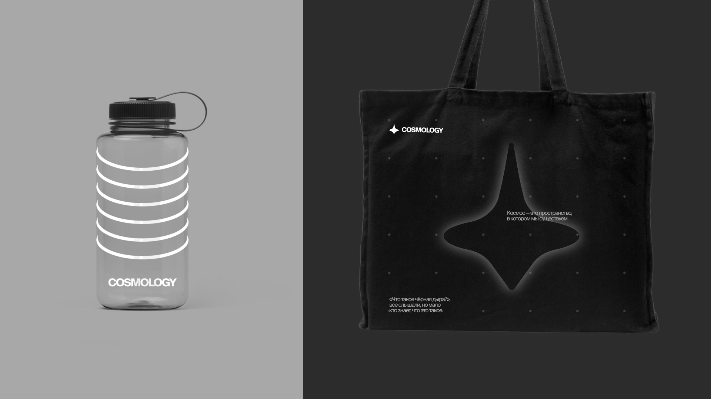
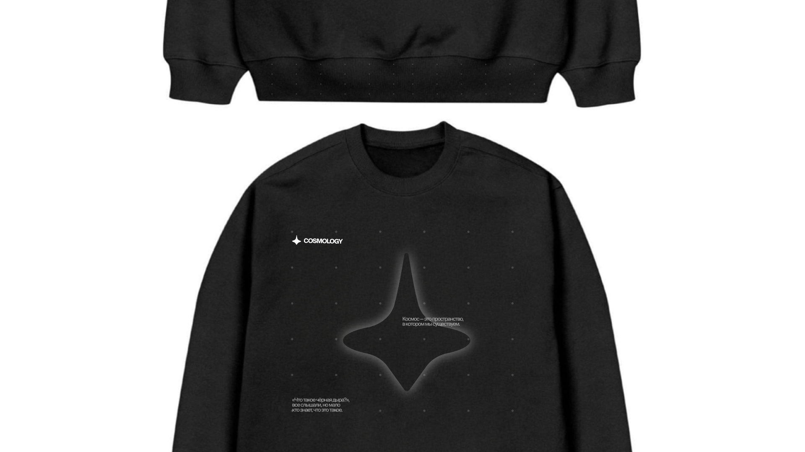
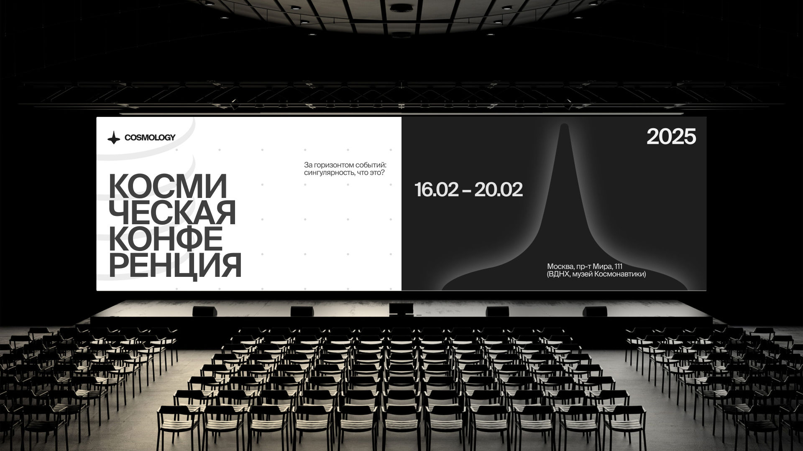

Космос — это пространство, в котором мы существуем. Однако, услышав вопрос «Что такое чёрная дыра?», многие теряются: все слышали, но мало кто знает, что это такое. Мы хотим взглянуть на космос как на сущность без влияния человека и объяснить сложные аспекты астрономии простыми словами в увлекательном и интерактивном стиле.
Волчок — это бесконечное вращение, как и понятие времени в окрестностях черной дыры.
 Использование четырёх оттенков серого в вашем медиа-сервисе о космосе важно, потому что это: создаёт сложную иерархию, добавляет глубину, улучшает читаемость, служит универсальным фоном, хорошо отражает тему космоса, а также обеспечивает гибкость дизайна, делая его современным, функциональным и эстетичным.
Это универсальный и современный гротескный шрифт, который идеально подходит для медиа-сервиса о космосе благодаря своей лаконичности, четкости и функциональности.
Примеры применения айдентики:
   